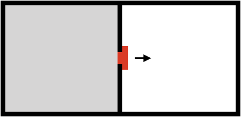
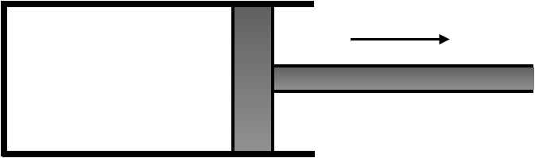

문제 2
단계 1
그림과 같이 부피가 같은 두 부분 A, B가 밸브로 연결된 용기가 있다. 초기에 밸브를 닫은 채로 A 부분에 이상기체를 채우고, B 부분은 진공 상태로 만들었다. 밸브를 열면 A의 이상기체가 자유롭게 팽창하여 A, B 부분 모두를 채우고 부피가 처음의 두 배가 된다. 용기가 외부와 열 출입이 없는 단열 상태를 항상 유지하고 있다면, 밸브를 연 후 이상기체의 온도는 올라가는가, 내려가는가, 변하지 않는가? 이상기체의 의미와 관련지어 설명하시오.

단계 2
그림과 같이 이상기체가 들어있는 피스톤 용기를 생각하자. 피스톤 용기는 완벽한 단열상태를 항상 유지한다고 가정한다. 피스톤이 아주 천천히 움직이도록 피스톤을 빼는 힘을 조절하여 용기의 부피를 두 배로 만들었다. 이때, 이상기체의 온도는 초기상태와 비교하여 올라가는가, 내려가는가, 변하지 않는가? 열역학 법칙과 관련지어 설명하시오.

단계 3
실생활이나 대기현상, 또는 물리실험에서 단열팽창의 예를 말해보고 그 원리를 간략히 설명해 보시오. "단계 1, 2"와의 차이점 또는 유사점을 설명하시오.